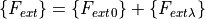
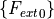
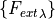

Semi-analytical Models for Panels (compmech.panel)¶
-
class
compmech.panel.panel.Panel(a=None, b=None, r=None, alphadeg=None, stack=None, plyt=None, laminaprop=None, mu=None, m=11, n=11, offset=0.0, y1=None, y2=None, **kwargs)[source]¶ General Panel class
It works for both flat plates, cylindrical and conical panels. The right model is selected according to parameters
r(radius) andalphadeg(semi-vertex angle).The approximation functions for the displacement fields are built using Bardell’s functions.
- Parameters
- afloat, optional
Length (along the
 coordinate).
coordinate).- bfloat, optional
Width (along the
 coordinate).
coordinate).- rfloat, optional
Radius for cylindrical panels.
- alphadegfloat, optional
Semi-vertex angle for conical panels.
- stacklist or tuple, optional
A sequence representing the angles for each ply.
- plytfloat, optional
Ply thickness.
- laminaproplist or tuple, optional
Orthotropic lamina properties:
 .
.- mufloat, optional
Material density.
- m, nint, optional
Number of terms for the approximation functions along
and ,
respectively.- offsetfloat, optional
Laminate offset about panel mid-surface. The offset is measured along the normal (
 ) axis.
) axis.- y1, y2float, optional
Define the lower and upper limit along
for panel with incomplete
domains.
Methods
add_force(self, x, y, fx, fy, fz[, cte])Add a punctual force with three components
calc_cA(self, aeromu[, silent, finalize])Calculate the aerodynamic damping matrix using the piston theory
calc_fext(self[, inc, size, col0, silent])Calculate the external force vector

calc_fint(self, c[, size, col0, silent, nx, …])Calculate the internal force vector

calc_k0(self[, size, row0, col0, silent, …])Calculate the constitutive stiffness matrix
calc_kA(self[, size, row0, col0, silent, …])Calculate the aerodynamic matrix using the linear piston theory
calc_kG0(self[, size, row0, col0, silent, …])Calculate the linear geometric stiffness matrix
calc_kM(self[, size, row0, col0, silent, …])Calculate the mass matrix
freq(self[, atype, tol, sparse_solver, …])Natural frequency analysis
get_size(self)Calculate the size of the stiffness matrices
lb(self[, tol, sparse_solver, calc_kA, …])Linear buckling analysis
plot(self, c[, invert_y, vec, deform_u, …])Contour plot for a Ritz constants vector.
save(self)Save the
Panelobject usingpicklestatic(self[, NLgeom, silent])Static analysis for cones and cylinders
strain(self, c[, xs, ys, gridx, gridy, NLterms])Calculate the strain field
stress(self, c[, F, xs, ys, gridx, gridy, …])Calculate the stress field
uvw(self, c[, xs, ys, gridx, gridy])Calculate the displacement field
calc_kT
-
add_force(self, x, y, fx, fy, fz, cte=True)[source]¶ Add a punctual force with three components
- Parameters
- xfloat
The
position.- yfloat
The
position in radians.- fxfloat
The
component of the force vector.- fyfloat
The
component of the force vector.- fzfloat
The
component of the force vector.- ctebool, optional
Constant forces are not incremented during the non-linear analysis.
-
calc_cA(self, aeromu, silent=False, finalize=True)[source]¶ Calculate the aerodynamic damping matrix using the piston theory
-
calc_fext(self, inc=1.0, size=None, col0=0, silent=False)[source]¶ Calculate the external force vector
Recall that:

such that the terms in  are constant and the terms in  will be scaled by the parameter
inc.- Parameters
- incfloat, optional
Since this function is called during the non-linear analysis,
incwill multiply the terms .- silentbool, optional
A boolean to tell whether the log messages should be printed.
- Returns
- fextnp.ndarray
The external force vector
-
calc_fint(self, c, size=None, col0=0, silent=False, nx=None, ny=None, Fnxny=None, inc=None)[source]¶ Calculate the internal force vector
- Parameters
- cnp.ndarray
The Ritz constants vector to be used for the internal forces calculation.
- sizeint, optional
The size of the internal force vector. Can be the size of a global internal force vector of an assembly.
- col0int, optional
Offset in a global internal forcce vector of an assembly.
- silentbool, optional
A boolean to tell whether the log messages should be printed.
- nxint, optional
Number of integration points along
.- nyint, optional
Number of integration points along
.- Fnxnynp.ndarray, optional
Laminate stiffness for each integration point, if not supplied it will assume constant properties over the panel domain.
- incfloat, optional
Load increment.
- Returns
- fintnp.ndarray
The internal force vector
-
calc_k0(self, size=None, row0=0, col0=0, silent=False, finalize=True, c=None, nx=None, ny=None, Fnxny=None, inc=None, NLgeom=False)[source]¶ Calculate the constitutive stiffness matrix
If
cis not given it calculates the linear constitutive stiffness matrix, otherwise the large displacement linear constitutive stiffness matrix is calculated. When usingc``the size of ``cmust be the same assize.In assemblies of semi-analytical models the sparse matrices that are calculated may have the
sizeof the assembled global model, and the current constitutive matrix being calculated starts at positionrow0andcol0.- Parameters
- sizeint
The size of the calculated sparse matrices.
- row0, col0: int or None, optional
Offset to populate the output sparse matrix (useful when assemblying panels).
- silentbool, optional
A boolean to tell whether the log messages should be printed.
- finalizebool, optional
Asserts validity of output data and makes the output matrix symmetric, should be
Falsewhen assemblying.- carray-like or None, optional
This must be the result of a static analysis, used to compute non-linear terms based on the actual displacement field.
- nx, nyint or None, optional
Number of integration points along
and , respectively, for
the Legendre-Gauss quadrature rule applied in the numerical
integration. Only used when cis given.- Fnxny4-D array-like or None, optional
The constitutive relations for the laminate at each integration point. Must be a 4-D array of shape
(nx, ny, 6, 6)when using classical laminated plate theory models.- NLgeombool, optional
Flag to indicate if geometrically non-linearities should be considered.
-
calc_kA(self, size=None, row0=0, col0=0, silent=False, finalize=True)[source]¶ Calculate the aerodynamic matrix using the linear piston theory
-
calc_kG0(self, size=None, row0=0, col0=0, silent=False, finalize=True, c=None, nx=None, ny=None, Fnxny=None, NLgeom=False)[source]¶ Calculate the linear geometric stiffness matrix
See
Panel.calc_k0()for details on each parameter.
-
calc_kM(self, size=None, row0=0, col0=0, silent=False, finalize=True)[source]¶ Calculate the mass matrix
-
freq(self, atype=4, tol=0, sparse_solver=True, silent=False, sort=True, damping=False, reduced_dof=False)[source]¶ Natural frequency analysis
Note
This will be deprecated soon, use
compmech.analysis.freq().The following parameters of the will affect the linear buckling analysis:
- Parameters
- atypeint, optional
Tells which analysis type should be performed:
1: considers k0, kA and kG0 (and cA depending on ‘damping’)2: considers k0 and kA (and cA depending on ‘damping’)3: considers k0 and kG04: considers k0 only
- tolfloat, optional
A tolerance value passed to
scipy.sparse.linalg.eigs.- sparse_solverbool, optional
Tells if solver
scipy.linalg.eig()orscipy.sparse.linalg.eigs()should be used.Note
It is recommended
sparse_solver=False, because it was verified that the sparse solver becomes unstable for some cases, though the sparse solver is faster.- silentbool, optional
A boolean to tell whether the log messages should be printed.
- sortbool, optional
Sort the output eigenvalues and eigenmodes.
- dampingbool, optinal
If aerodynamic damping should be taken into account.
- reduced_dofbool, optional
Considers only the contributions of
 and
and  to the stiffness
matrix and accelerates the run. Only effective when
to the stiffness
matrix and accelerates the run. Only effective when
sparse_solver=False.
Notes
The extracted eigenvalues are stored in the
eigvalsparameter and the eigenvector in the
eigenvector in the eigvecs[:, i-1]parameter.
-
get_size(self)[source]¶ Calculate the size of the stiffness matrices
The size of the stiffness matrices can be interpreted as the number of rows or columns, recalling that this will be the size of the Ritz constants’ vector
 , the internal force vector and
the external force vector .
, the internal force vector and
the external force vector .- Returns
- sizeint
The size of the stiffness matrices.
-
lb(self, tol=0, sparse_solver=True, calc_kA=False, silent=False, nx=10, ny=10, c=None, ckL=None, Fnxny=None)[source]¶ Linear buckling analysis
Note
This will be deprecated soon, use
compmech.analysis.lb().The following parameters will affect the linear buckling analysis:
- Parameters
- tolfloat, optional
A float tolerance passsed to the eigenvalue solver.
- sparse_solverbool, optional
Tells if solver
scipy.linalg.eigh()orscipy.sparse.linalg.eigsh()should be used.- calc_kAbool, optional
If the Aerodynamic matrix should be considered.
- silentbool, optional
A boolean to tell whether the log messages should be printed.
- carray-like, optional
A set of Ritz constants that will be use to compute KG.
- ckLarray-like, optional
A set of Ritz constants that will be use to compute KL.
- nx and nyint or None, optional
Number of integration points along
and , respectively, for
the Legendre-Gauss quadrature rule applied in the numerical
integration.- Fnxny4-D array-like or None, optional
The constitutive relations for the laminate at each integration point. Must be a 4-D array of shape
(nx, ny, 6, 6)when using classical laminated plate theory models.
Notes
The extracted eigenvalues are stored in the
eigvalsparameter of thePanelobject and the eigenvector in the
eigvecs[:, i-1]parameter.
-
plot(self, c, invert_y=False, vec='w', deform_u=False, deform_u_sf=100.0, filename='', ax=None, figsize=(3.5, 2.0), save=True, title='', colorbar=False, cbar_nticks=2, cbar_format=None, cbar_title='', cbar_fontsize=10, colormap='jet', aspect='equal', clean=True, dpi=400, texts=[], xs=None, ys=None, gridx=300, gridy=300, num_levels=400, vecmin=None, vecmax=None, plotoffsetxs=0.0, plotoffsetys=0.0)[source]¶ Contour plot for a Ritz constants vector.
- Parameters
- cnp.ndarray
The Ritz constants that will be used to compute the field contour.
- vecstr, optional
Can be one of the components:
Displacement:
'u','v','w','phix','phiy'Strain:
'exx','eyy','gxy','kxx','kyy','kxy','gyz','gxz'Stress:
'Nxx','Nyy','Nxy','Mxx','Myy','Mxy','Qy','Qx'
- deform_ubool, optional
If
Truethe contour plot will look deformed.- deform_u_sffloat, optional
The scaling factor used to deform the contour.
- invert_ybool, optional
Inverts the
axis of the plot.- savebool, optional
Flag telling whether the contour should be saved to an image file.
- dpiint, optional
Resolution of the saved file in dots per inch.
- filenamestr, optional
The file name for the generated image file. If no value is given, the
 parameter of the
parameter of the Panelobject will be used.- axAxesSubplot, optional
When
axis given, the contour plot will be created inside it.- figsizetuple, optional
The figure size given by
(width, height).- titlestr, optional
If any string is given it is added as title to the contour plot.
- colorbarbool, optional
If a colorbar should be added to the contour plot.
- cbar_nticksint, optional
Number of ticks added to the colorbar.
- cbar_format[ None | format string | Formatter object ], optional
See the
matplotlib.pyplot.colorbardocumentation.- cbar_titlestr, optional
Colorbar title. If
cbar_title == ''no title is added.- cbar_fontsizeint, optional
Fontsize of the colorbar labels.
- colormapstring, optional
Name of a matplotlib available colormap.
- aspectstr, optional
String that will be passed to the
AxesSubplot.set_aspect()method.- cleanbool, optional
Clean axes ticks, grids, spines etc.
- xsnp.ndarray, optional
The
positions where to calculate the displacement field.
Default is Noneand the method_default_fieldis used.- ysnp.ndarray, optional
The
ypositions where to calculate the displacement field. Default isNoneand the method_default_fieldis used.- gridxint, optional
Number of points along the
axis where to calculate the
displacement field.- gridyint, optional
Number of points along the
where to calculate the
displacement field.- num_levelsint, optional
Number of contour levels (higher values make the contour smoother).
- vecminfloat, optional
Minimum value for the contour scale (useful to compare with other results). If not specified it will be taken from the calculated field.
- vecmaxfloat, optional
Maximum value for the contour scale.
- Returns
- axmatplotlib.axes.Axes
The Matplotlib object that can be used to modify the current plot if needed.
-
save(self)[source]¶ Save the
Panelobject usingpickleNotes
The pickled file will have the name stored in
Panel.namefollowed by a'.Panel'extension.
-
static(self, NLgeom=False, silent=False)[source]¶ Static analysis for cones and cylinders
Note
This will be deprecated soon, use
compmech.analysis.static().The analysis can be linear or geometrically non-linear. See
Analysisfor further details about the parameters controlling the non-linear analysis.- Parameters
- NLgeombool
Flag to indicate whether a linear or a non-linear analysis is to be performed.
- silentbool, optional
A boolean to tell whether the log messages should be printed.
- Returns
- cslist
A list containing the Ritz constants for each load increment of the static analysis. The list will have only one entry in case of a linear analysis.
Notes
The returned
csis stored inself.analysis.cs. The actual increments used in the non-linear analysis are stored in theself.analysis.incrementsparameter.
-
strain(self, c, xs=None, ys=None, gridx=300, gridy=300, NLterms=True)[source]¶ Calculate the strain field
- Parameters
- cnp.ndarray
The Ritz constants vector to be used for the strain field calculation.
- xsnp.ndarray, optional
The
coordinates where to calculate the strains.- ysnp.ndarray, optional
The
coordinates where to calculate the strains, must
have the same shape as xs.- gridxint, optional
When
xsandysare not supplied,gridxandgridyare used.- gridyint, optional
When
xsandysare not supplied,gridxandgridyare used.- NLtermsbool
Flag to indicate whether non-linear strain components should be considered.
- Returns
- resdict
A dictionary of
np.ndarrayswith the keys:(x, y, exx, eyy, gxy, kxx, kyy, kxy)
-
stress(self, c, F=None, xs=None, ys=None, gridx=300, gridy=300, NLterms=True)[source]¶ Calculate the stress field
- Parameters
- cnp.ndarray
The Ritz constants vector to be used for the strain field calculation.
- Fnp.ndarray, optional
The laminate stiffness matrix. Can be a 6 x 6 (ABD) matrix for homogeneous laminates over the whole domain.
- xsnp.ndarray, optional
The
coordinates where to calculate the strains.- ysnp.ndarray, optional
The
coordinates where to calculate the strains, must
have the same shape as xs.- gridxint, optional
When
xsandysare not supplied,gridxandgridyare used.- gridyint, optional
When
xsandysare not supplied,gridxandgridyare used.- NLtermsbool
Flag to indicate whether non-linear strain components should be considered.
- Returns
- resdict
A dictionary of
np.ndarrayswith the keys:(x, y, Nxx, Nyy, Nxy, Mxx, Myy, Mxy)
-
uvw(self, c, xs=None, ys=None, gridx=300, gridy=300)[source]¶ Calculate the displacement field
For a given full set of Ritz constants
c, the displacement field is calculated and stored in the parametersu,v,w,phix,phiyof thePanelobject.- Parameters
- cfloat
The full set of Ritz constants
- xsnp.ndarray
The
positions where to calculate the displacement field.
Default is Noneand the method_default_fieldis used.- ysnp.ndarray
The
ypositions where to calculate the displacement field. Default isNoneand the method_default_fieldis used.- gridxint
Number of points along the
axis where to calculate the
displacement field.- gridyint
Number of points along the
where to calculate the
displacement field.
- Returns
- outtuple
A tuple of
np.ndarrayscontaining(u, v, w, phix, phiy).
Notes
The returned values
u`,v,w,phix,phiyare stored as parameters with the same name in thePanelobject.